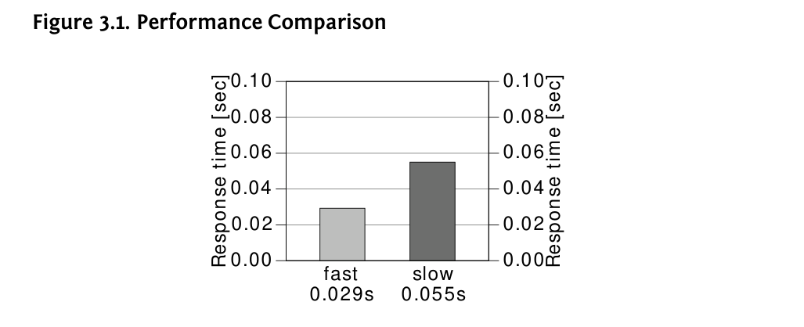

Chương 3: Hiệu suất và Khả năng mở rộng
Tác động hiệu suất của khối lượng dữ liệu
Khối lượng dữ liệu được lưu trữ trong cơ sở dữ liệu có tác động lớn đến hiệu suất của nó. Thông thường, người ta chấp nhận rằng một truy vấn trở nên chậm hơn khi có thêm dữ liệu trong cơ sở dữ liệu. Nhưng tác động hiệu suất lớn đến mức nào nếu khối lượng dữ liệu gấp đôi? Và làm thế nào chúng ta có thể cải thiện tỷ lệ này? Đây là những câu hỏi chính khi thảo luận về khả năng mở rộng của cơ sở dữ liệu.
Ví dụ, chúng ta phân tích thời gian phản hồi của truy vấn sau khi sử dụng hai chỉ mục khác nhau. Định nghĩa chỉ mục sẽ vẫn chưa được tiết lộ trong thời gian này—chúng sẽ được tiết lộ trong quá trình thảo luận.
SELECT count(*)
FROM scale_data
WHERE section = ?
AND id2 = ?Cột SECTION có một mục đích đặc biệt trong truy vấn này: nó kiểm soát khối lượng dữ liệu. Số SECTION càng lớn, số hàng mà truy vấn chọn càng nhiều. Hình 3.1 cho thấy thời gian phản hồi cho một SECTION nhỏ.

Có sự khác biệt hiệu suất đáng kể giữa hai biến thể chỉ mục. Cả hai thời gian phản hồi vẫn dưới một phần mười giây, vì vậy ngay cả truy vấn chậm hơn cũng có thể đủ nhanh trong hầu hết các trường hợp. Tuy nhiên, biểu đồ hiệu suất chỉ cho thấy một điểm thử nghiệm. Thảo luận về khả năng mở rộng có nghĩa là xem xét tác động hiệu suất khi thay đổi các tham số môi trường—chẳng hạn như khối lượng dữ liệu.
80